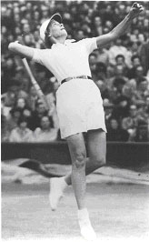
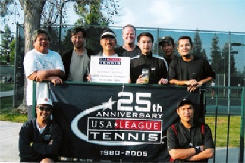

Alice Marble (September 28, 1913 – December 13, 1990) was an American tennis player who won 18 Grand Slam championships from 1936 through 1940. Five of those championships were in singles, six were in women's doubles, and seven were in mixed doubles. Born in the small town of Beckwourth, California, Marble moved with her family at the age of five to San Francisco. A tomboy, she excelled in many sports such as baseball, but her brother persuaded her to try a more lady-like sport, tennis, which she quickly honed while playing in Golden Gate Park. She suffered a setback at age fifteen when she was raped by a stranger, but she overcame the trauma and won several California junior tournaments. She was again challenged in 1934 after collapsing during a match at the French Championships.
Doctors diagnosed her with pleurisy and tuberculosis. She took an extended rest but roared back into competition. At the U.S. Championships, Marble won the singles title in 1936, 1938, 1939, and 1940. She won the women's doubles title with Sarah Palfrey Cooke in 1937, 1938, 1939, and 1940. And she won the mixed doubles title in 1936 (with Gene Mako), 1938 (with Don Budge), 1939 (with Harry Hopman), and 1940 (with Bobby Riggs). At Wimbledon, Marble won the singles title in 1939. She won the women's doubles title with Cooke in 1938 and 1939. And she won the mixed doubles title in 1937 (with Budge), 1938 (with Budge), and 1939 (with Riggs). In Wightman Cup competition, Marble lost only one singles and one doubles match during the years she competed (1933 and 1937 through 1940). Marble was the Associated Press Athlete of the Year in 1939 and 1940. After capping a stellar amateur career in 1940, Marble turned professional and earned a great sum of money traveling around playing exhibition tournaments. Through illness and victory, Marble had the support of her coach and mentor, Eleanor "Teach" Tennant, who changed her technique and influenced her life. During World War II, Marble was married to Joe Crowley, a pilot, who was killed in action over Germany. Only days before his death, she miscarried their child following a car accident. After an attempt to kill herself, she recuperated and in 1945 agreed to spy for U.S. intelligence. Her mission involved renewing contact with a former lover, a Swiss banker, and obtaining Nazi financial data. The operation ended when a Nazi agent shot her in the back. She was extracted and recovered from her injury. Few details of the operation ever emerged because of her silence. The story was told only after her death when Courting Danger ISBN 0-312-92813-0, a second autobiography, was published. In 1964, Marble was inducted into the International Tennis Hall of Fame. Weakened by pernicious anemia, Marble died at a hospital in Palm Springs, California.
2009 GGTC Club Tournament Champions
Division Champions and Runner-ups
Men’s Open Singles: Chris Prokop def. Lou Maunupau
Men’s 4.0 Singles: Albert Lou def. Matt Ray
Men’s 3.5 Singles: Jon Berman def. Joel Rosenblatt
Women’s 4.0 Singles: Laura Pagano def. Theresa Jahangir
Women’s 3.0-3.5 Singles: Amirah Shahid def. Claire Laure-Belt
Men’s 8.0 Doubles: Lou Maunupau/Robert Sheets def. Jonathan Lunsford/Kim Steele
Women’s 7.0 Doubles: Andrea Payne/Nina Pasquale def. Cathy Maupin/Pam Miller
Mixed Doubles: Andrea Payne/Jonathan Lunsford def. Mary Keil/Steven Tabak
Congrats to all the finalists! Thank you all for supporting GGTC’s Annual Club Tournament! Special thanks to Rayma Mui for her tireless work during the tournament!
2007 Club Tournament Results
Singles DivisionChampion Runner-up
Men’s Open TBA
Men’s 4.5 Chris Zapf def. Victor Saucedo
Men’s 4.0 Thai Nguyen def. Quoc Huan Ta
Men’s 3.5 Stan Hays def. Franklin Solanga
Men’s 3.5 Cons. Satish Palai def. Bruce Owyoung
Men’s 3.0 Raymond Vasquez def. Matt Kabak
Women’s 4.0 Lisa Shaw def. Minnie Wong
Women’s 3.0 Nina Pasquale def. Courtney Griffin
CLUB TOURNAMENT FINAL RESULTS JUNE 4-5, 11-12, 2005 MEN'S 5.0 SINGLES
Chris Prokop def Lou Maunupau 6-3, 6-2 MEN'S 4.0 SINGLES Dan Mc Cormick def Andrew Minkus 6-2, 6-3 MEN'S 3.5 SINGLES Justin Crable def Mitch Hu 7-6, 7-6 MEN'S 3.0 SINGLES Garrick Hileman def Alex Chuzhoy 6-0, 6-0; MEN'S 2.5 SINGLES Con Keighran def Gerard Zaratan 6-3, 6-2 WOMEN'S 3.0 SINGLES Claire Laure-Belt def Sally Brien 6-1, 7-6 MIXED 6.0 DOUBLES Faye Taam / Gilbert Quong def Alexandra Fouladi / Bijan. Fouladi 6-4, 6-4 MIXED 7.0 DOUBLES Colleen McGuire /Anthony Smith def Lesley Schwartz/ Luigi Silverman 6-2, 6-2 MIXED 8.0 DOUBLES Pam Schams / Marcus Steinback def Lisa Shaw / Robert Carter 6-2, 7-5 MEN'S 8.0 DOUBLES Hugh Diddy / Tony Chen def Charlie Esteban / Kim Steele 6-4, 6-4 MEN'S 7.0 DOUBLES Mike Shaw / Marc Gould def Russ Semana / Winton Tomlinson 6-1, 6-4 MEN'S 6.0 DOUBLES Calvin Taam / Spencer Wong def Ken Tse / Karthik Sainath 6-3, 6-2 WOMEN'S 7.0 DOUBLES Colleen McGuire / Pam Schams def Tess Ball / Claire Chow 6-4, 6-0
2005 RESIDENTS TOURNAMENT FINAL RESULTS OCTOBER 22-23, 29-30, 2005
Men's 3.0 Singles Alex Chuzhoy def. Bijan Fouladi 6-3, 6-3 Men's 3.5 Singles Garrick Hileman def. Justin Crable 6-3, 6-3 Men's 4.0 Singles Hugh Diddy def. Matt Ray 6-1, 7-6 Men's 4.5 Singles Chris Prokop def. Z. Amir 6-2, 6-0 Men's Open Singles Robert Stang def. Kerry Mitchell (three sets) Women's 3.0 Singles Jennifer Ly def. Connie Cykman 6-4,6-4 Women's 3.5 Singles Jennifer Lacy def. Jessica Abroms 6-4, 6-4 Women's. 3.0 Doubles Maureen Chew/Meredith Chew def Chris Sturgis/Terry Fiala 6-2, 6-4 Men's 4.0 Doubles Jonathan Lunsford/ Tony Chen def. Kenny Clews/Jason Tang 6-2, 6-3 Men's 4.5 Doubles Hugh Diddy / Charlie Esteban def. Matt Ray/ Barry Yu 6-4, 7-5 Mixed 3.5 Doubles Colleen McGuire/Anthony Smith def. Elsa Francisco/ Willie Morrissey (def ) Mixed 4.0 Doubles Anna Leong / Jeff Reilly def. Pamela Resser / Greg Campbell 6-3, 6-3
2005 Rec & Park Dept. Novice/Intermediate Tournament Results March 19th & 20th, 2005 Men’s 3.0 Singles F Ted Steichen def Clive Lazarus 63, 75 SF Ted Steichen def David Latuippe 63, 61 SF Clive Lazurus def John Putnam 1-0 ret Men’s 3.5 Singles F Mitch Hu def Alex Laneux 64, 64 SF A. Laneux def Albert Ha 76 (5), 63 SF Mitch Hu def Yoshi Hoigome 75, 61; Women’s 3.0 Singles F Katalin Potter def Gina Tassone 61, 61 SF Gina Tassone def Jennifer Ly wo SF Katalin Potter def Kimberly Fisher 63, 63; Women’s 3.5 Singles F Janet Broude def Anne Senges (ill) SF Anne Senges def Claire Hunter 8-5 SF Janet Broude def Merri Baldwin 8-5; Women’s 3.0 Doubles F Elana Curtis/ LeAnn Canne def Cecily Hunter/Zoe Ng 64, 63; Women’s 3.5 Doubles F Joan Barkan/ Shaye Hester def Andrea Payne/Debbie Warren 61, 62; Men’s 3.0 Doubles F Calvin Taam/Spencer Wong def David Latiuppe/ Clive Lazarus 63, 60; Men’s 3.5 Doubles SF Mitch Seltzer/ Yuichiro Tanaka def Greg Simmons/ Kok Djoa 60, 62 F Mitch Seltzer/Yuichiro Tanaka vs. Casey Conroy/Steven Contreras C Greg Simmons/Kok Djoa def Cullen Quave/Rob Berry 75, 62
Yuich Tanaka's Men's Combo 7.5B USTA Team, the 2004 State Champions

2004 Residents Tournament Final Results October 23-24, 30-31, 2004 Men’s Open Singles David Halleck def Adam de Mezza 7-6, 6-2; Men’s Open Doubles C. Adams/ A. de Mezza def Patrick Hiti/ John Michelson 6-2, 6-2 Men’s 4.5 Singles Dirk Thye def Chris Prokop 0-6, 6-1, 6-2 Men’s 4.5 Doubles A. Berman/ D. Thye def B. Yu/ E. Yu 7-6(2), 4-6, 6-2 Men’s 4.0 Singles Barry Yu def Matt Ray 6-2, 6-1 Men’s 3.5 Doubles Anthony Smith def Steve Robinson 4-6, 6-3, 6-1 Men’s 3.5 Doubles James Goh/ David Mariottinni def D. Rodriquez/ R. Rodriquez 6-0, 6-0 Men’s 3.0 Singles Ricardo Marino def Robert Kunisake 6-4, 6-1 Men’s 3.0 Doubles Brian Fisher/ Jonathan Padilla def Lawrence Henriquez/ John Putnam 6-1, 7-5 Men’s 2.5 Singles Frank Lee def Emir Turkanovic 6-0, 6-1 Women’s 3.0 Singles Ann Senges def Jessica Abroms 3-6, 6-0, 6-0 Women’s 3.5 Singles Jennifer Lacy def C. Sheean 6-4, 6-4 Mixed 3.0 Doubles Jennifer Yasis/ Brian Fisher def Nancy Freeman/ Larry Bennett 6-0, 6-2 Mixed 3.5 Doubles Sharyn Yee/ Edward Yee def. Kathleen Bannon/ Anthony Smith 4-6, 6-4, 7-5 Mixed 4.0 Doubles Gay Heit/ Mark Dixon def Lisa Shaw/ Greg Simmons 6-4, 2-6, 6-2 Mixed Open Doubles Marian Hoo/ Robert Carter def Kenneth Goldring / Melissa Slymko 6-3, 6-4
2003 Recreation and Park 3.0, 3.5 Tournament Results March 20-21, 2004
Men’s 3.0 Doubles Mark Hein/ Bob Fremeau def Jayson Gatdula/ Chris Magsakay 6-3, 6-3; Men’s 3.0 Doubles Consolation John Putnam/A.T. Howe def Cullen Quave/Robert Berry 6-2, 6-3; Men’s 3.0 Singles Antonio Puente def Jason Beckham 7-5, 5-7, 7-5; Men’s 3.0 Singles Consolation Charles Kees def wo Daniel Rodriquez 6-2, 6-3; Men’s 3.5 Doubles Patrick Davidson/Jack Fraenkel def Jonathan Padilla/Adam Young 6-7(4), 7-6(4) 7-5; Men’s 3.5 Doubles Consolation Gabriel Fung/Shawn Mc Dermott def woCraig Peters/Larry Szeto; Men’s 3.5 Singles Anthony Smith def Marcus Lo 6-4, 7-6(6); Men’s 3.5 Singles Consolation Vince Luk def Bruce Owyoung 5-7, 7-6(5), 7-6(4); Women’s 3.0 Doubles Connie Mason/Andrea Payne def Irene Dubois/Jennifer Yasis 6-1, 6-7(5), 6-1; Women’s 3.0 Doubles Consolation Miriam Khatiblou/Pat Wayne def wo Janav Johnson/Vanessa Wong; Women’s 3.0 Singles Andrea Payne def Jennifer Yasis 6-1, 4-6, 6-1; Women’s 3.0 Singles Consolation Sharyn Yee def Allegra Hsiao 6-1, 6-1
2003 RESIDENTS TOURNAMENT FINAL RESULTS OCTOBER 18-19, 25-26
Men’s 3.0 Doubles B. Kenna- D.Mui def R. Joglekar-R. Roth 62,63; Men’s 3.0 Singles Mark Carnahan def Alex Chuzhoy 62,64; Men’s 3.5 Doubles J. Fraenkel- C. Parker def L.Rasky- R.Semana 64,75; Men’s 3.5 Singles Anthony Smith def Jose Zavaleta 75, 06, 62; Men’s 4.0 Doubles B. Campbell- A.Small def C.Jolly-M.Dinh 36, 64, 63; Men’s 4.0 Singles Hugh Diddy def Matt Ray 63, 64; Men’s 4.5 Singles Joseph Aurore def Marcon Fabrice 63, 64; Men’s 5.0 Singles Geoff Sykman def Chris Prokop 60, 60; Men’s Open Doubles V. Bajaj- V.Kopytoff def J. Mercado-C.Swan 64, 36, 62; Men’s Open Singles Kerry Mitchell def Jose Mercado 46, 64, 64; Women’s 3.0 Doubles K. Bannon - B. Maffei def S. Ford- A. Payne 64, 46, 63 Women's 3.0 Singles Connie Cykman def Mimi Thomas 62, 60; Women’s 3.5 Singles Pamela Resser def Jacqueline Wong 61, 61; Mixed 3.0 Doubles B. Fremeau - A. Payne def K. Bannon - P. Berg 63, 61; Mixed 5.0 Doubles T. Mitchell- K. Blewitt def. C. Esteban- M. Hoo 57, 64, 76 (8)
CLUB TOURNAMENT RESULTS June 7-8, 14-15, 2003
Thanks to all of you who participated in the GGTC Club Tournament! Below are the final results of the Club Tournament:
Men's Open Single F Thai Nguyen d. Rick Ray 6-3; 6-0 SF Thai Nguyen d. (2) Chris Prokop 6-0; 3-6; 6-2 SF Rick Ray d. (1) Jojo Zalameda Wo (inj) Men's Open Double F Freitas/Lee d. Maunupau/Sleeper 6-2; 6-2 Men's 3.0 Singles F Mike Plotkowski d. Keith Wall 6-3; 6-1 SF Mike Plotkowski d. Alan Hale 6-2; 6-3 SF Keith Wall d. (1) Alex Chuzhoy 6-4; 7-5 Men's 3.5 Singles F (1) Jose Zavaleta d. (2) Leszek Kotzian 7-5; 6-4 SF (2) Leszek Kotzian d. Frank Beneduci 6-4; 6-2 SF (1) Jose Zavaleta d. Bruce Owyoung 6-0; 6-1 Men's 4.0 Singles F Hugues Labbe d. (2) Philip Jolly 6-3; 6-2 SF (2) Philip Jolly d. Hugh Diddy 6-2; 5-7; 6-3 SF Hugues Labbe d. Tosha Semenovsky 6-2; 6-0 Men's 4.5 Singles F Rick Ray d. Jack Corsello 6-1; 6-2 SF Jack Corsello d. Scott Fong 7-6(9) Ret (inj) SF Rick Ray d. Jeffry Skorheim 6-2; 6-3 Women's 3.0 Singles F Nessa Brady d. Amy Cardeneau SF Nessa Brady d. Miki Tanaka 6-4; 6-4 SF Amy Cardeneau d. Irene Dubois Wd (tae) Women's 4.0 Singles F Martha Ehrenfeld d. Thais Nye 6-2; 6-3 SF Thais Nye d. Stacy Ruff 0-6; 6-3; 7-6(7) SF Martha Ehrenfeld d. Yuki Marth 6-3; 6-3 Men's Combo 6.0 Doubles F Fraenkel/Tanaka d. Dworman/Mintz 6-1, 6-4 SF Fraenkel/Tanaka d. Morrissey/Silverberg 6-4; 6-4 SF Dworman/Mintz d. Hale/Putnam 6-3; 6-2 Men's Combo 7.0 Doubles F Ju/Rasmussen d. Hays/Zavaleta 6-4; 1-6; 6-2 SF Ju/Rasmussen d. Simmons/Smith 4-6; 6-3; 6-2 SF Hays/Zavaleta d. Fong/Tanaka Wo (inj) Men's Combo 8.0 Doubles F Jolly/Lee d. (1) Bilby/Carter 6-1; 6-1 SF Jolly/Lee d. Genstil/Multhauf 7-6(8); 6-2 SF (1) Bilby/Carter d. Medina/Parker 6-2; 6-4 Women's Combo 6.0 Doubles F Bannon/Louie d. Chang/Dubois 6-7(4); 6-1; 6-2 SF Bannon/Louie d. Michely/Vidaver 6-2; 6-2 SF Chang/Dubois d. Ford/Payne 6-4; 6-4 Mixed Combo 7.0 Doubles F Fryman/Rasky d. Kuan/Tanaka 4-6; 6-4; 7-5 SF Fryman/Rasky d. Bolante/Francisco 6-0; 6-1 SF Kuan/Tanaka d. (1) Bunning/Carter 2-6; 6-1; 6-1 Mixed Combo 8.0 Doubles F Bilby/Vlasak d. Esteban/Hoo 6-4; 6-2 SF Esteban/Hoo d. (2) Kobayashi/Pedreno 7-6(4); 6-7(2); 7-5 SF Bilby/Vlasak d. (1) Parker/Wright 6-7(5); 6-2; 6-4
2002 Club Tournament Results
Men’s Open Singles F Lou Maunupau d. Michael Gruber 6-3; 6-2 SF Michael Gruber d. Chris Prokop 3-6; 6-3; 7-6(3) SF Lou Maunupau d. Larry Miercke 6-3; 6-4 Men’s 3.0 Singles F Alex Chuzhoy d. Michael Strickland 7-5; Ret (ill) SF Michael Strickland d. Robert Mostovoy 6-2; 6-2 SF Alex Chuzhoy d. Ziggy Quinete 6-0; 6-0 Men’s 3.5 Singles F Jose Zavaleta d. Leszek Kotzian 5-7; 7-6(3); 6-0 SF Jose Zavaleta d. Jayson Tang 6-0; 6-1 SF Leszek Kotzian d. Greg Simmons 6-2; 6-2 Men’s 4.0 Singles F Kenneth Clews d. Charles Higgins 6-0; 7-5 QF Philip Jolly d. Eiffel Monje 6-3; 7-6 QF Mario Mora d. Kim Steele 6-2; 5-7; 6-2 Women’s 3.0 Singles F Rosa Puebla d. Candida Hoeberichts 6-0; 6-1 SF Candida Hoeberichts d. Mary Jo Tierney 6-2; 6-1 SF Rosa Puebla d. Suzanne Tompkins 6-0; 6-2 Women’s 4.0 Singles SF Nathalie VanLinder d. Kathleen McMahon 6-2; 6-1 SF Lisa Shaw d. Anne Conley 7-6(2); 6-4 Men’s 6.0 Combo Doubles F Silverberg/Taam d. Chin/Fraenkel 6-0; 6-4 SF Chin/Fraenkel d. Berg/Morrissey 2-6; 6-1; 7-6(4) SF Silverberg/Taam d. Braden/Schlessinger 6-2; 6-3 Men’s 7.0 Combo Doubles F Herbert/Jolly d. Simmons/Smith 6-0; 6-4 SF Herbert/Jolly d. Rasky/Tanaka 6-3; 6-2 SF Simmons/Smith d. Fraenkel/Semana 7-5; 7-6 Men’s 8.0 Combo Doubles F Bilby/Carter d. Seltzer/Zavaleta 6-4; 6-2 SF Seltzer/Zavaleta d. Mitchell/Murphy 7-6(4); 6-2 SF Bilby/Carter d. Keil/Mora 6-1; 6-1 Women’s 6.0 Combo Doubles F Hester/Walsh d. Chew/Taam 6-0; 7-6(2) SF Chew/Taam d. Ford/Payne 6-2; 6-3 SF Hester/Walsh d. Long/Mason 6-2; 6-2 Women’s 7.0 Combo Doubles F Maffei/Wong d. Haskell/Keil 6-1; 6-2 Mixed 6.0 Combo Doubles F Hester/Rauh d. Hoeberichts/Hoeberichts 6-4; 6-0 SF Hoeberichts/Hoeberichts d. Holmes/Long 0-6; 6-4; 6-4 SF Hester/Rauh d. Taam/Taam 2-6; 7-6(4); 6-4 Mixed 7.0 Combo Doubles F Bunning/Carter d. Glick/Webdale 6-3; 6-1 SF Glick/Webdale d. Anisimov/Kensington Routt 6-2; 7-6(2) SF Bunning/Carter d. Kuhn/McCoy 6-0; 6-4 Mixed 8.0 Combo Doubles F Parker/Wright d. Gutierrez/Smith 6-7(7); 6-4; 6-3 SF Gutierret/Smith d. Jang/Levinson 6-7(2); 6-1; 6-2 SF Parker/Wright d. Hoo/Monje 6-3; 4-6; 6-4 Mixed 9.0 Combo Doubles F Choi/Niho d. Keil/Prokop 6-4; 6-2
2001 CLUB TOURNAMENT WINNERS
Event * Winner Men’s Open Singles James Hsu Men’s 4.5S Dan DeAngelis Men’s 4.0S Ed Van Roden Men’s 3.5S Laurent Combredent Men’s 3.0S Dan St. John Women’s Open Singles Women’s 4.5S Women’s 4.0S Women’s 3.5S Dorly Carnes Women’s 3.0S Ivana Kazdova Men’s Open Doubles Chris Prokop ∓ George Hays Men’s 9.0D Men’s 8.0D Charlie Parker ∓ Hal Beno Men’s 7.0D Dan St. John ∓ Rick St. John Men’s 6.0D Ed Silverberg ∓ Tim Sheehy Women’s Open Doubles Women’s 9.0D Women’s 8.0D Women’s 7.0D Mary Cunningham ∓ Karen Cancino Women’s 6.0D Mixed Open Doubles Mixed 9.0D Mixed 8.0D Mixed 7.0D Debbie Warren ∓ Greg Simmons Mixed 6.0D Yuichiro Tanaka ∓ Faye Taam * (blank - not played)
Questions about the club? Send us an e-mail..
Mailing info: P.O. Box 591237, San Francisco CA 94117.